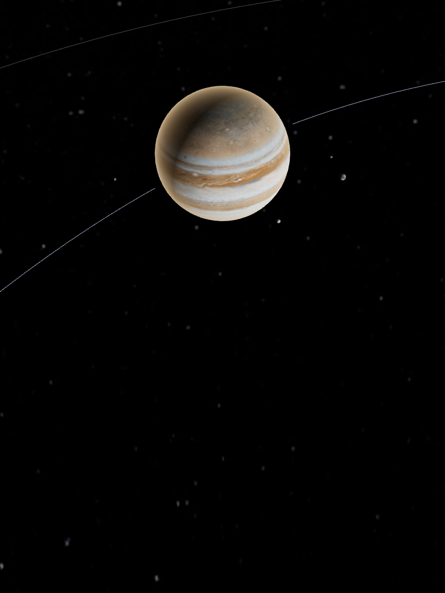

JowiszIoEuropaKallistoGanimedes
Orbitka
Skala uproszczona
Jowisz
gazowy
olbrzym
Średnicaok. 11 × Ziemia
Jowisz
Ziemia
Na średnicy Jowisza zmieści się ok. 11 Ziem.
Jowisz ok. 139 800 km · Ziemia ok. 12 700 km
- Rok trwa11,9 roku ziemskiego
- Obrót wokół osi9 h 56 min
CiekawostkaWielka Czerwona Plama to wir burzowy szerszy niż cała Ziemia.
Treść przykładowa · teksty w M4 (Treści)
7 października 20261 dzień/s
1 dzień10 dni1 mies.1 rok